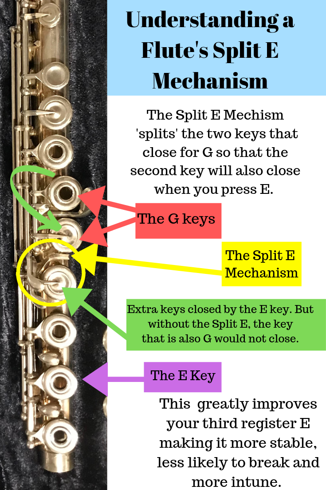

On the flute, the third third register E is notoriously unstable. This occurs as a result of some of our keys having partners. This implies that every time we press a key, its partner is also pressed. One of these pairs of keys can operate independently from the other thanks to the mechanism. In other words, when you push down the E key, it also presses down its partner and the partner of G. But only its companion is pressed down; the G Key itself is not.
The offset G has been a common feature on closed-hole student flutes for a while, making it simpler for young pupils with small hands to reach. Once a learner was proficient enough to play an open-hole flute, many would switch to an inline G flute and apply silicone or cork plugs to cover any holes that were still challenging for the player to access.
The inline G key can be seamlessly incorporated into the other tone hole keys' mechanisms. As an offset G key requires its own set of ribs, posts, and key rods, which adds some weight to the flute, this facilitates manufacture a little bit.
However, with modern considerations for efficient design and comfort, we believe it is critical that all of our instruments be designed with the hands in mind. This is our way of assisting in the prevention of performance-related hand and forearm injuries such as tendonitis and carpal tunnel syndrome.